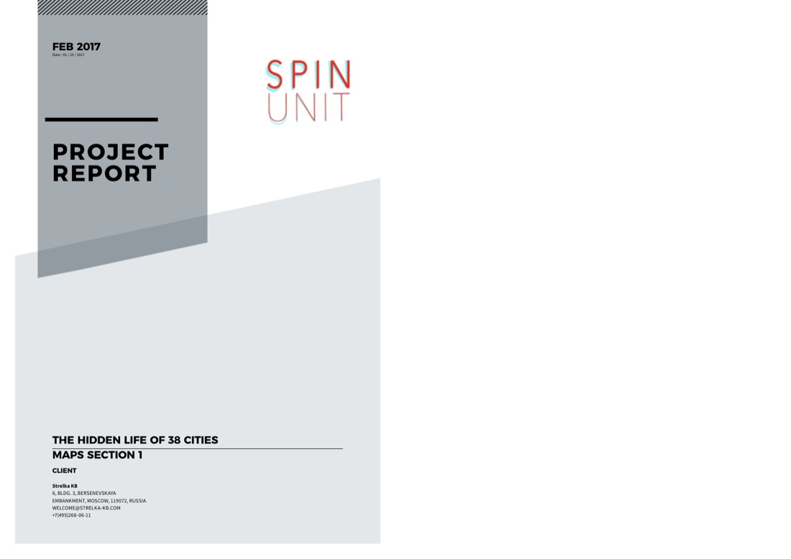

The Hidden Life of 38 Cities — World Cup 2018 Heritage
Hosting the World Cup brings investment and attention to a handful of cities — but Strelka KB wanted to understand public space and youth activity across a much wider set of Russian regional centres, using the tournament as the occasion rather than the sole focus.
Commissioned as “Metamorphology Russia” (Agreement No. 1702-35a, December 2016), scoped as legacy/urban-impact analysis to identify high-value, high-youth-activity public spaces at both city and individual-space scale — deliberately covering 38 cities across three population tiers, not just the 11 official 2018 World Cup hosts.
Roughly 2.5–3 million geolocated social media posts were collected across the 38 cities; a sample of 3–10% per city was tagged (by subject, feeling, youth, gender, activity, monument type, indoor/outdoor) both manually and via machine-learning scene classification, cross-validated against each other. Hourly activity curves for leisure, social, and youth-tagged content, corrected for each city’s time zone, mapped the daily rhythm of public life.
Delivered as a seven-part large-format map atlas plus per-city analytical dashboards for all 38 cities, completed February 2017.
{kind=link}

Open full size ↗